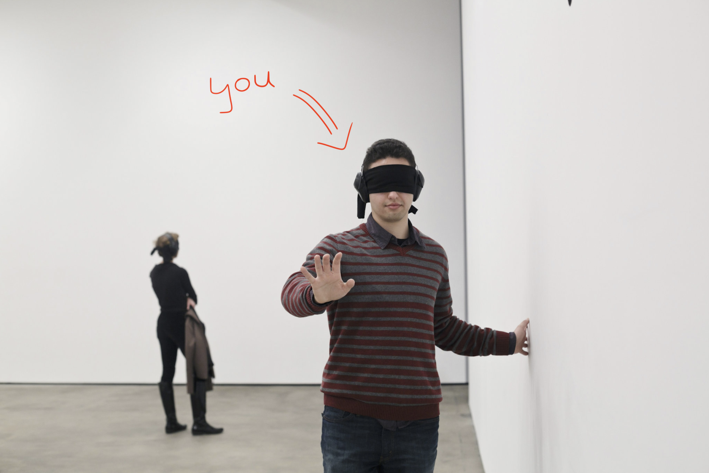
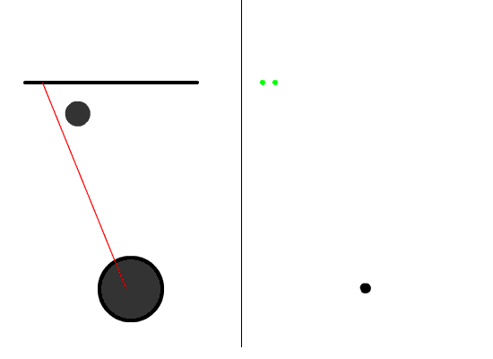
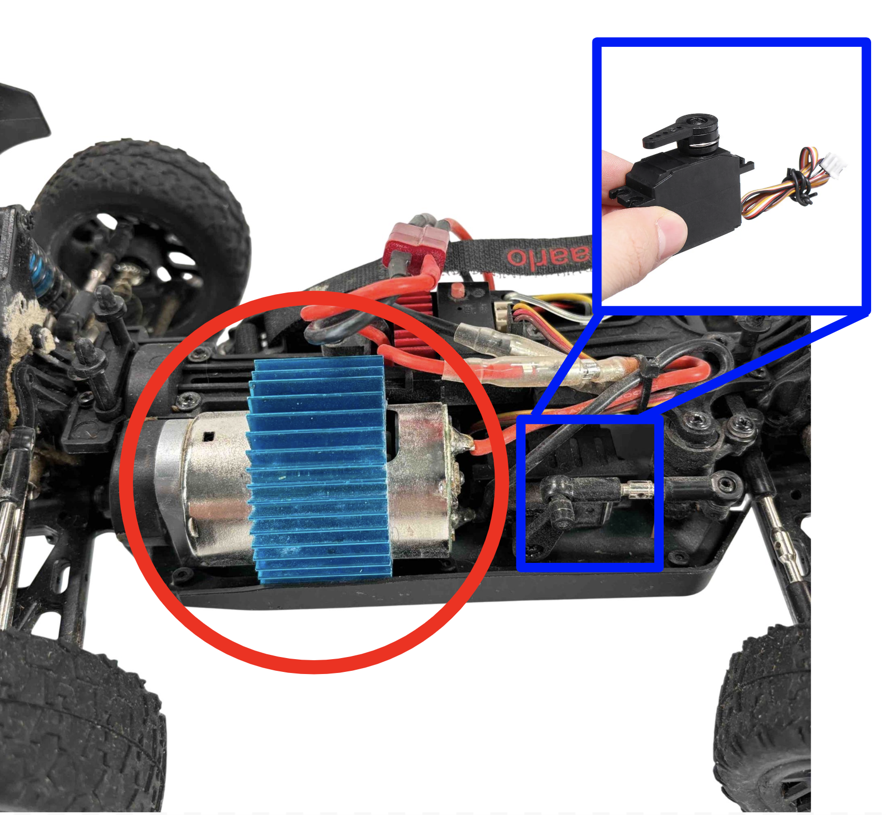
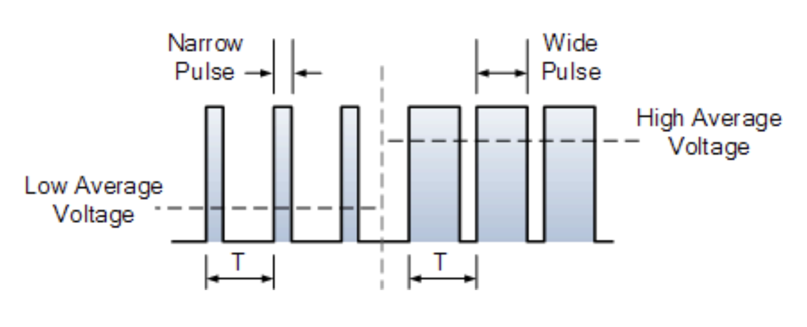
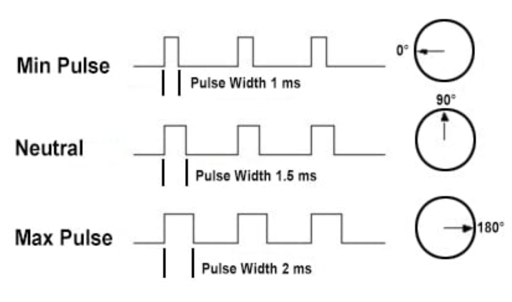
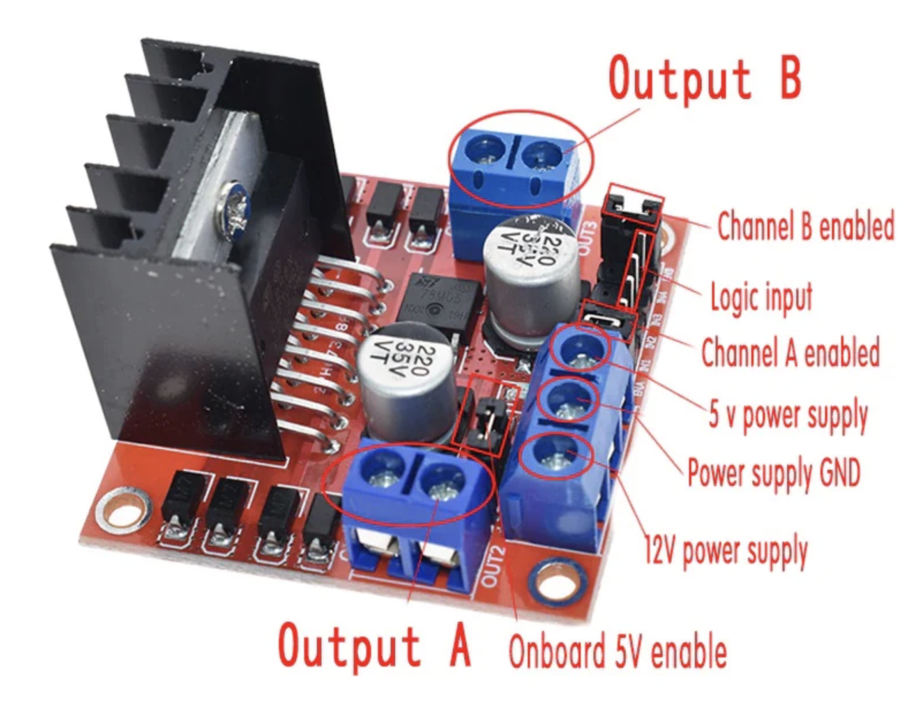

A couple years ago, my roommate and I set out on a mission to build the fastest autonomous remote-control car that the halls of our apartment complex had ever seen. We wanted a cheap yet durable design that would work regardless of what environment we dropped it into. After a long break, I’ve decided to pick this project back up and thought “what better way to catch myself up on everything than by getting you guys up to speed on the project”. So, that’s exactly what I'll do in this multi-part blog series. I will try to explain everything in as much detail as I can while also making it digestible for non-technical readers. Hopefully this will have the added effect of jogging my memory through the various details of the project that I failed to document back in 2023.
I’m using an off the shelf remote-controlled car which I've linked here. This 1:14 scale “racing buggy” offered one of the best dollar/mph ratios of any RC car on the market at the time. Not only does it have a top speed of 70kmph or ~43mph (which we confirmed as soon as it arrived) but it also comes with replacement parts for many of the fragile components along with the tools for all these replacements. For the onboard brains of the car I'm using an Nvidia Jetson Nano Developer Kit B01. This little edge device will take care of all compute related tasks ranging from sensor fusion to control algorithms for driving the car. Note that this obviously isn't everything we need for this project. I will go over additional components in future installments of this series.
Quick vocab check, when I refer to “sensor data” it's just a fancy way of referring to the video feed from the onboard camera or the accelerometer and gyroscopic data from the onboard Inertial Measurement Unit (IMU). “Sensor measurements” are specific moments in the sensor data – think specific frames from the video feed for example. I use the terms “autonomous” and “self-driving” interchangeably because they mean the same thing in this context. I also use the terms “agent” and “robot” and “car” interchangeably because the car is essentially a robot on wheels which is also an agent navigating its environment.
Now that that’s all settled, let's get some project-level scoping out of the way – starting with the question: at what point will I be satisfied with the autonomy of the car?
With these goals in mind, I debated between 2 major approaches for making this car self-driving. One approach was to drive the car around the track a couple times manually and log the sensor data along with my controller inputs at every given moment of the drive. This would essentially give us a dataset of what the car was looking at when I turned it left, right, or sped up/down. We could then take this dataset and train a model to learn the correlations in the data and mimic my driving style.
However, there are 2 issues with this approach.
The first being that the car is literally going to learn to mimic my driving style. I’ve crashed this thing a lot and I definitely am not a professional RC car driver so my dreams of the car taking an optimal racing line would go out the window. Second, while the Jetson does have an Nvidia GPU, it’s still way too underpowered to run any reasonably sized model. So more likely than not, any model that I can actually fit onboard and get decent performance out of will probably overfit to where I drove the car and gathered training data. It won’t generalize well to the park or another building. This would directly contradict the goal to make the car resilient to track changes and it’s a lot of manual effort to map out a track.
So instead, we will be using Simultaneous Localization and Mapping – commonly abbreviated as SLAM. SLAM refers to the problem of generating and constantly updating a map of one’s surroundings while also keeping track of one's real-time location in that map.
Think of it this way, imagine you’re blind-folded and brought into a room you’ve never been in before.
If someone asked you to then draw the layout of the room you’re in without removing your blindfold what would you do? Most of us would probably put our hands out and try to feel our way around the room, maybe even walk over to a wall and run our hands along the entire perimeter of the room to get a feel for its shape until we’re back where we started. This is exactly the same idea behind SLAM algorithms. The robot uses sensor measurements as it moves around to create an accurate map of its surroundings while simultaneously trying to understand how much it’s moved and in what direction.
Ok cool, but how exactly does a car sense its surroundings without arms to feel around for walls?
There are many sensors out there that can help a robot gain an understanding of its environment. One of the most commonly used sensors (and OP imo) is the Light Detection And Ranging sensor, or LiDAR. LiDAR sensors work by emitting a pulse of light and measuring how long that pulse of light takes to reflect off a surface and return to the sensor. This method of sensing has many real-world applications from surveying the sea floor to portrait mode and Face ID on the iPhone (yes your iPhone is shooting hundreds of tiny lasers at your face every time you use Face ID).
As you can see in the GIF this LiDAR sensor can sweep across a room and map out its surroundings.
However, there are a couple of major problems with LiDAR: they’re usually quite expensive and, most importantly, they just make life too easy. Yes, putting a LiDAR sensor on the car would solve most of my problems and produce a really good world map. But, I also don’t like handouts and have decided to push myself to the brink of insanity for the vibes, and besides, I might as well try to squeeze out every last drop of aura I can from this project. If I can do this, I (a CS undergrad who’s never really built anything physical apart from LEGOs) will have somehow vibe-engineered some cutting edge sensor fusion and localization algorithms.
Since there's still a lot to cover (and this definitely isn't a cop out because I myself haven’t really looked into it yet) I won't be covering the specific type of SLAM I’ll be using in this entry. However, feel free to read about it here.
Up until now I've talked a lot about making the car aware of its environment, but this means nothing if we can’t actualize anything from this understanding, so we’re going to solve that first. In order to do that we need to understand how the RC car moves around in the first place.
Here is a close up of the RC car’s onboard motors with the plastic cover removed. I’ve highlighted the main motor that sends power to the wheels in a red circle and expanded the servo motor that powers the steering rack in the blue box. Note, the servo motor in the expanded view isn't the exact same one but both are functionally the same and look almost identical.
The main motor is a simple 7.4 volt (V) brushed direct-current (DC) motor from CROBOLL. We can just ignore the blue thing on top by the way – that's just a radiator to passively cool the motor. The speed at which this motor rotates determines the speed of the drive shaft, which in turn determines the speed at which the tires rotate, which ultimately determines the speed at which the car moves. The other motor in the blue box is a precise actuator called a “servo” which we can use to control the angle of the steering rack, which in turn determines which way the front wheels are pointed.
TLDR, if we can control the rate of rotation of the main drive motor and the angle of the servo motor we should have full control over the car’s speed and direction.
Out of the box, a small RC receiver/speed controller component lifts the heavy weight of interpreting the signal from the transmitter (aka remote control) and translating that into commands that both onboard motors can interpret. This means that if we remove the default receiver and replace it with our own that can interface with the Jetson, we should be able to mimic the signal that the motors understand and effectively take over control.
So… what is this signal and how do we mimic it?
Pulsed Width Modulation (PWM) is the method of controlling the average power or “amplitude” of an electrical signal by determining how frequently you want to supply a high voltage signal – hence the “pulse” part of the name. As we can see in the image below the first half shows quick bursts of high voltage spaced by longer periods of low voltage. This keeps the average voltage output low. In order to increase the average voltage we simply increase the time of the high voltage pulses and reduce the duration at which the voltage signal is low. By increasing the average voltage that's delivered to the main motor we increase the speed at which it rotates.
We can use this same protocol to control the servo-motor as well. In this case however, instead of determining the speed at which the motor will rotate the PWM signal is translated to the angle of the servo.
Luckily, the Jetson comes with 40 GPIO header pins, and pins 32 and 33 are capable of providing PWM signals.
Once we wire up the servo motor’s power, ground and signal wires to power and ground pins along with pin 32 on the Jetson we’re good to go in the steering department. All we need is some python code which programmatically sets our desired “pulse width” to pin 32 and voila:
Here is a closer view:
Unfortunately, the speed controller that comes out of the box doubles as a receiver that exclusively communicates with the transmitter that comes out of the box. It also doesn’t appear to have any easy points of entry on the board to hack in our own PWM signal. The three GPIO header pins at the bottom left of the controller (highlighted in a red box in the image below) seem to be strictly for outputting a signal and the circuit board is just too small and lacking documentation to understand.

Hence, we’ve opted to swap this component out with the L298N Dual H-Bridge Motor Driver Module. This motor driver can control up to 2 motors and allows for a PWM input to control the speed of the motor.
Now, like with the servo, we connect the motor driver’s 5V to the Jetson’s 5V power, its GND pin to the Jetson’s GND, and its ENB pin to GPIO 33 on the Jetson – we’re wiring up ENB and PIN 33 because we’re going to plug our motor into Output B as opposed to Output A. There is some additional complexity involved in controlling motor polarity with this driver. This is important because the polarity is what determines whether the car moves forward or backward. In addition to the PWM signal which determines the speed at which the motor rotates we need to provide a high and low signal using 2 separate GPIO pins – let's call these pins A and B. If pin A is high and pin B is low then the motor will spin in one direction, if we flip it and pin A is low while pin B outputs high the motor will start spinning in the other direction. More details about this can be found by tracing the routing for IN3 and IN4 in the wiring diagram. Also note that the motor driver essentially acts as a middleman between the Jetson and the motor, relaying commands on the Jetson’s behalf because the Jetson cannot supply enough current to power the motor directly.
Finally, lets test both motors:
Notice how we got the steering motion less jerky too 😎
Woohoo! We now have programmatic control over both of the motors on the RC car. I have documented all the python code for steering and throttle control here so feel free to check it out. Do note however that this code is a little further along than this blog so some things may not make too much sense yet. I also drew out a rudimentary wiring diagram which should help clear any confusion about how exactly the different components piece together.

One thing to note is that Jetsons vary slightly by generation and model so if you're going to try and reproduce these results or do anything with the GPIO header on your Jetson make sure to refer to the output of the "pinout" commandline tool. This tool will give you information on your pin layout.
The L298N motor driver suddenly stopped working one day when we took it off the little stand and put it on the ground. When we tried increasing the voltage we could hear the motor trying to turn over but unable to actually start spinning. After some investigation with a multimeter and just vibing it out we realized that if we gave the car a little jump start by pushing it forward the system was finally able to overcome the friction and roll smoothly. It looks like it isn’t able to supply enough current to overcome the static friction of the motor, drivetrain and wheels on the ground, which meant that this driver had to be replaced – which is something I will talk more about in the next entry in this series. The next entry will also go over the process of powering the Jetson off the onboard 7.4V lipo battery and designing a more permanent housing for all the various components to fit on the car.
Before I wrap up, I wanted to take a moment and shout out my friend Aaryan Garg for helping get this project to where it is today. He’s the other voice in the videos above, and if it weren’t for him (and his trusty multimeter), this car would probably be a pile of scrap by now. As an ECE major, he was the brains behind a lot of the wiring — and honestly, before he walked me through everything on our massive whiteboard, I had no idea what half the stuff in this blog even meant. Thank you, Aaryan!
Note these links may not be the primary sources or in order of appearance.
{kind=link}